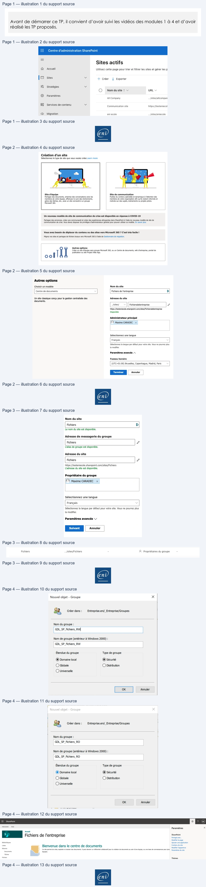
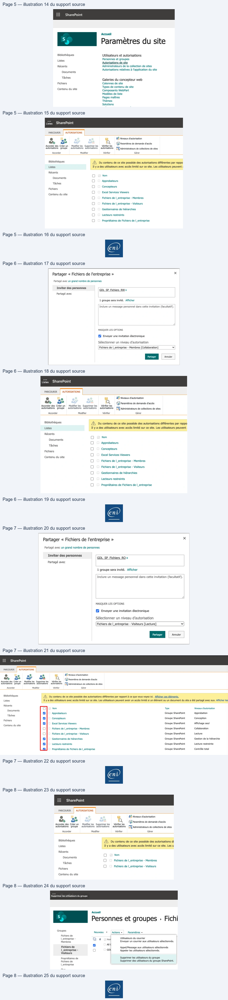
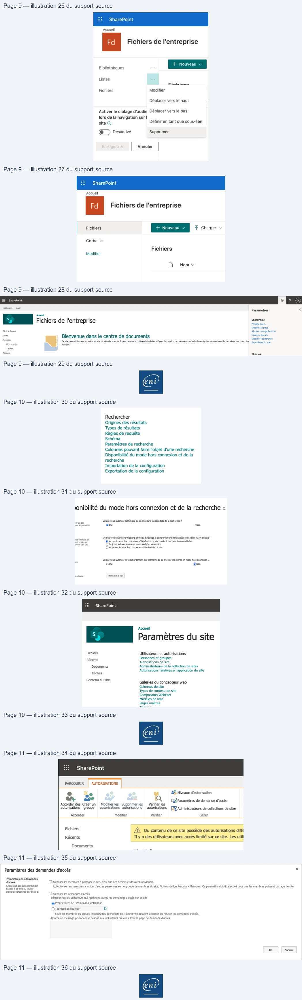

Transcription du document du Drive TSSR. La mise en forme est adaptée au Web ; les compléments IA du portail sont présentés séparément.
Cloud et Microsoft 365
TP 02 du Module 04 – Services complémentaires
Avant de démarrer ce TP, il convient d’avoir suivi les vidéos des modules 1 à 4 et d’avoir
réalisé les TP proposés.
Administration OneDrive
•
Connectez-vous sur https://login.microsoftonline.com/ et utilisez vos identifiants de
connexion créés dans l’étape précédente.
Parcours de l’ensemble des options proposées
•
Administration SharePoint – Création d’un site
•
Allez dans le panneau d’administration SharePoint, cliquez sur Sites, Sites actifs puis
Créer.
•
Cliquez sur Autres options.
Page 1/11
© ENI – Tous droits réservés
Centre d'administration SharePoint
Sites actifs
f
Accueil
Utilisez cette page pour trier et filtrer les sites et gérer les p
| E
sites
Y
+ Créer
J Exporter
=}
Stratégies
v
©
Nomdusite 7 v
URL v
&
Paramètres
All Company
-Isites/allcompan
BZ
Services de contenu
Y
Communication site
https://testeniecol
@
Migration
eni ecole
./sites/eniecole
Cloud et Microsoft 365
•
Choisissez le modèle Centre de documents, nommez le site, ajoutez le propriétaire et
sélectionnez la langue et le fuseau horaire.
Page 2/11
© ENI – Tous droits réservés
Création d’un site
Sélectionnez le type de site que vous voulez créer.Learn more
4
7
| |
| \
Site d'équipe
Site de communication
Partagez des documents, entamez des conversations avec les
Publiez du contenu splendide et dynamique à l'attention des
membres de votre équipe, effectuez le suivi des événements,
membres de votre organisation afin quils restent informés et
gérez des tâches, etc, avec un site connecté à un groupe
motivés sur des sujets, événements ou projets précis.
Microsoft 365.
Un nouveau modèle de site de communication de crise est disponible en réponse à COVID-19
Partagez des annonces, créez une communauté et créez des expériences attrayantes dans SharePointà l'aide du nouveau modèle de site de
communication de crise. Vous devez disposer de privilèges d'administrateur général pour pouvoir utilisercemodèle. En savoir plus
Vous avez besoin de déplacer du contenu ou des sites vers Microsoft 365 ? C'est très facile !
Migrez vos sites et partagesde fichiers locaux vers Microsoft 365 à l'aide de Gestionnaire de migration.
Autres options
Créez un site d'équipe sans groupe Microsoft 365, ou un Centre de documents, wiki d'entreprise, portail de
I ]
Publication ou site ProjectWeb App.
Autres options
Choisir un modèle
Nom du site
Un site classique conçu pour la gestion centralisée des
Adresse du site
documents.
Fichiersdelentreprise
0
https://testeniecole.sharepoint.com/sites/Fichiersdelentreprise
Disponible
Administrateur principal
PA maxime CARADEC
x
Sélectionnez une langue
Sélectionnez la langue par défaut pour votre site. Vous ne pourrez plus
la modifier.
Paramètres avancés /\
Fuseau horaire
(UTC+01:00) Bruxelles, Copenhague, Madrid, Paris
Ÿ
ent
Cloud et Microsoft 365
•
N’ajoutez pas de membres pour le moment et terminez la création du site. Revenez
ensuite sur la liste des sites actifs et cliquez sur l’URL du site.
•
A l’image des pratiques sur des serveurs de fichiers On Premise, nous allons utiliser AGDLP
pour gérer les permissions d’accès à notre site. Créez deux groupes de domaine local
dans l’unité d’organisation Groupes puis forcez la synchronisation.
•
Ajoutez GG_ServiceIT dans le groupe GDL_SP_Fichiers_RW
Page 3/11
© ENI – Tous droits réservés
Nom du site
Le nom du site est disponible.
Adresse de messagerie du groupe
’
alias de groupe est disponible.
Adresse du site
’
https://testeniecole.sharepoint.com/sites/Fichiers
L'adresse du site est disponible.
Propriétaire du groupe
©) Maxime CARADEC
x
Sélectionnez une langue
Sélectionnez la langue par défaut pour votre site. Vous ne pourrez plus
la modifier.
Paramètres avancés \v
Fichiers
.../sites/Fichiers
-
&
Propriétaires du groupe
-
Cloud et Microsoft 365
•
Sur le site SharePoint Fichiers de l’entreprise, cliquez sur la roue dentée puis Paramètres
du site.
Page 4/11
© ENI – Tous droits réservés
Nouvel objet - Groupe
X
&,
Créer dans :
Entreprise.eni/_Entreprise/Groupes
Nom du groupe :
GDL_SP_Fichiers_RW|
Nom de groupe (antérieur à Windows 2000) :
GDL_SP_Fichiers_RW
Etendue du groupe
Type de groupe
© Domaine local
© Sécurité
O Globale
O Distribution
© Universelle
[|
oK
Annuler
F
!||
|
R,
Créer dans :
Entreprise.eni/_Entreprise/Groupes
[
||
|
Nom du groupe :
GDL_SP_Fichiers_RO
Nom de groupe (antérieur à Windows 2000) :
GDL_SP_Fichiers_RO
Étendue du groupe
Type de groupe
@ Domaine local
© Sécurité
© Globale
O
Distribution
© Universelle
OK
Annuler
macounR
PAGE
CP
4
Accueil
ss
| Fichiers de l'entreprise
Shareoine
Modifier la page
Bbiotrèques
Ajouter une application
Listes
Bienvenue dans le centre de documents
eee
Recents
Ce ste permet de créer exploter et stocker des documents. 1 peut devenir un référentiel colaboraif pour la création de documents au sin dune équipe, ou une base de connaissances pour PS ramesdu cit
Documents
coupes.
Tâches
”
Fichiers
Thèmes

Cloud et Microsoft 365
•
Cliquez sur Autorisations de site.
•
Cliquez sur Accorder des autorisations puis ajoutez le groupe GDL_SP_Fichiers_RW créé,
affichez les options et sélectionnez collaboration.
Page 5/11
© ENI – Tous droits réservés
Hi
SharePoint
Accueil
Paramètres du
site
Bibliothèques
Utilisateurs et autorisations
Personnes et groupes
Listes
Autorisations de site
Récents
Administrateurs de la collection de sites
Autorisations relatives à l'application du site
Documents
Tâches
+
Galeries du concepteur web
Fichiers
Colonnes de site
4
Types de contenu de site
Contenu du site
Composants WebPart
Modèles de liste
Pages maîtres
Thèmes
Solutions
Listes
SharePoint
PARCOURIR | AUTORISATIONS
e
e
2% Niveaux d'autorisation
+.
+
a
QQ
roramatres de demande d'accès
Accorder des Créer un
Modifier les
Supprimer les
Vérifier les
autorisations groupe
autorisations autorisations
autorisations | [ff Administrateurs de collections de sites
Accorder
Modifier
Vérifier
Gérer
Bibliothèques
à
Du contenu de ce site possède des autorisations différentes par rappo
Listes
Il y a des utilisateurs avec accès limité sur ce site. Les utilisateurs peuvent ;
Récents
Oo
Nom
Documents
D
.
Oo
Approbateurs
Tâches
0
Concepteurs
Fichiers
7
O
Excel Services Viewers
Contenu du site
O
Fichiers de |_entreprise - Membres
O
Fichiers de |_entreprise - Visiteurs
0
Gestionnaires de hiérarchies
=]
Lecteurs restreints
Oo
Propriétaires de Fichiers de |_entreprise
Cloud et Microsoft 365
•
Cliquez sur Accorder des autorisations puis ajoutez le groupe GDL_SP_Fichiers_RO créé,
affichez les options et sélectionnez Visiteurs.
Page 6/11
© ENI – Tous droits réservés
Partager « Fichiers de l'entreprise »
x
Partagé avec un grand nombre de personnes
pee Seee
GDL SP Fichiers RW x
Partagé avec
1 groupe sera invité.
Afficher
Inclure un message personne! dans cette invitation (facultatif).
MASQUER LES OPTIONS
Envoyer une invitation électronique
Sélectionner un niveau d'autorisation
Fichiers de |_entreprise
- Membres [Collaboration]
La
Listes
SharePoint
PARCOURIR | AUTORISATIONS
2% Niveaux d'autorisation
&
A
Q
+
af
(G2 Paramètres de demande d'accès
Accorder des Créer un
Modifier les
Supprimer les
Vérifier les
autorisations groupe
autorisations autorisations
autorisations | [j!Administrateurs
de collections de sites
Accorder
Modifier
Vérifier
Gérer
Bibliothèques
/\ Du contenu de ce site possède des autorisations différentes par rappo
Listes
Il y a des utilisateurs avec accès limité sur ce site. Les utilisateurs peuvent i
Récents
Nom
Documents
0
.
oO
Approbateurs
Taches
O
Concepteurs
Fichiers
p
oO
Excel Services Viewers
Contenu du site
O
Fichiers de |_entreprise
- Membres
Oo
Fichiers de |_entreprise - Visiteurs
Oo
Gestionnaires de hiérarchies
oO
Lecteurs restreints
oO
Propriétaires de Fichiers de |_entreprise
Cloud et Microsoft 365
•
Afin de clarifier la gestion dans le futur, vous pouvez supprimer les autorisations par
défaut positionnées par SharePoint.
•
Cliquez ensuite sur Visiteurs et supprimez l’entrée All company.
Page 7/11
© ENI – Tous droits réservés
Partager « Fichiers de l'entreprise »
x
Partagé avec un grand nombre de personnes
Inviter des
personnes
a
pe
GDL SP Fichiers RO x
Partagé avec
1 groupe sera invité. Afficher
Inclure un message personnel dans cette invitation (facultatif).
2
MASQUER LES OPTIONS
Envoyer une invitation électronique
Sélectionner un niveau d'autorisation
Fichiers de |_entreprise - Visiteurs [Lecture]
v
| Go
HI
SharePoint
PARCOURIR | AUTORISATIONS
e
e
ee.
ee
(3% Niveaux d'autorisation
®,
ye
se
dr
où
7
ai
QQ
Graramètres de demande d'accès
Accorder des Créer un
Modifier les
Supprimer les
Vérifier les
autorisations groupe
autorisations autorisations
autorisations | [JE Administrateurs de collections
de sites
Accorder
Modifier
Vérifier
Gérer
Bibliothèques
A\ Du contenu de ce site possède des autorisations différentes par rapport à ce que vous voyez ici. Afficher ces éléments.
Listes
Il y a des utilisateurs avec accès limité sur ce site. Les utilisateurs peuvent avoir un accès limité si un élément ou un document du site a été partagé avec eux. Afficher les
Récents
Oo
Nom
‘Type
Niveaux d'autorisation
Documents
Approbateurs
Groupe SharePoint
Approbation
Tâches
Concepteurs
Groupe SharePoint
Conception
Fichiers
Excel Services Viewers
Groupe SharePoint
Affichage seul
Contenu du site
(JO
Fichiers de |_entreprise
- Membres
Groupe SharePoint
Collaboration
O0
Fichiers de |_entreprise - Visiteurs
Groupe SharePoint
Lecture
Gestionnaires de hiérarchies
Groupe SharePoint
Gestion de la hiérarchie
Lecteurs restreints
Groupe SharePoint
Lecture restreinte
FZ}
Propriétaires de Fichiers de |_entreprise
Groupe SharePoint
Contrôle total
Cloud et Microsoft 365
Quelques bonnes pratiques
Il est possible de nettoyer l’affichage afin de clarifier l’ensemble des éléments affichés.
•
Cliquez sur Modifier dans le volet à gauche pour masquer les éléments jugés inutiles.
Page 8/11
© ENI – Tous droits réservés
HI
SharePoint
PARCOURIR | AUTORISATIONS
2% Niveaux d'autorisation
&
Q
&
+
as
(Gq Paramètres de demande d'accès
Accorder des Créer un
Modifier les
Supprimer les
_Vérifier les
autorisations
groupe
autorisations autorisations
autorisations
(79! Administrateurs de collections de sites
Accorder
Modifier
Vérifier
Gérer
Bibliothèques
/\ Du contenu de ce site possède des autorisations di
Listes
Il y a des utilisateurs avec accès limité sur ce site. Les u
Récents
O
Nom
Documents
—
.
oO
Fichiers de |_entreprise
- Membres
Tâches
:
Oo
Fichiers de I_entreprise - Visiteurs
Fichiers
Contenu du site
Accueil
Personnes et groupes
: Fichi
Groupes
à
Nouveau
+
Actions - |
Paramètres -
Fichiers de
a
Lentreprise -
Do
nor
Utilisateurs du courrier
Membres
Envoyer un courrier aux utilisateurs sélectionnés.
AILC
Fichiers de
Appel/Message aux utilisateurs sélectionnés
\_entreprise -
ia}
GDL
Appeler les utilisateurs sélectionnés.
Visiteurs
Propriétaires de
Supprimer les utilisateurs du groupe
Fichiers de
Supprimer des utilisateurs du groupe SharePoint.
Lentreprise

Cloud et Microsoft 365
Vous pouvez désactiver la synchronisation hors connexion sur les sites et ainsi protéger les
données d’éventuelles erreurs de synchronisation. Il est possible de le faire au niveau du site
ou de chaque bibliothèque.
•
Cliquez sur la roue dentée puis Paramètres du site.
•
Dans la section Rechercher cliquez sur Disponibilité du mode Hors connexion.
Page 9/11
© ENI – Tous droits réservés
Hi
SharePoint
Accueil
Fichiers de l'entreprise
Bibliothèques
aa
Listes
oe
Ciakbinen
Fichiers
Modifier
Déplacer vers le haut
1
Activer le ciblage d'audie Déplacer vers le bas
lors de la navigation sur |
site ©
Définir en tant que sous-lien
@_) Désactivé
Supprimer
i
SharePoint
Accueil
Fichiers de l'entreprise
Corbeille
Fichiers
Modifier
[Nom v
pancounn
race
a
x
Accueil
sp Fichiers de l'entreprise
Shareoine
Modifier la page
Bbiotnèques
Ajouter une application
Listes
Bienvenue dans le centre de documents
eee
Recents
Ce se permet
decréer explore stocker des documents. 1 peut devenir un référentiel colaboratf pour a création de documents au sein dune équipe, ou une base de connaissances pour LS paren
dtres fe sie
Documents
équpes.
Ticres
Fichiers
Thèmes
Cloud et Microsoft 365
•
Afin de limiter les fuites de données et les demandes d’accès intempestives, vous
pouvez restreindre cela en allant dans les autorisations de site puis Paramètres de
demande d’accès.
Page 10/11
© ENI – Tous droits réservés
Rechercher
Origines des résultats
Types de résultats
Règles de requête
Schéma
Paramètres de recherche
Colonnes pouvant faire l'objet d'une recherche
Disponibilité du mode hors connexion et de la
recherche
Importation de la configuration
Exportation de la configuration
ionibilité du mode hors connexion et de la recherche o
vet
Voulez-vous autoriser lafchage de ce site dans les résutats dela recherche ?
‘para pas dane
@ou
nen
Ce site contient des permissions affinées. Spécifiez le comportement d'indexation des pages ASPX du site :
‘vent vol ces
(Toujours indexer les composants WebPa
de ce ste
O Ne jamais indexer les compasants WebPart de ce site
Voulez-vous autoriser le téléchargement des éléments de ce site surles clients en made hors connexion ?
”
Cou
@Non
rochane
deere ste
HH
SharePoint
Accueil
Paramètres du site
Fichiers
Utilisateurs et autorisations
‘
Personnes et groupes
Récents
Autorisations de site
Documents
Administrateurs de la collection de sites
.
Autorisations relatives à l'application du site
Tâches
Contenu du site
Galeries du concepteur web
Colonnes de site
Types de contenu de site
Composants WebPart
Modèles de liste
Pages maîtres
End
Cloud et Microsoft 365
•
Décochez les 3 cases présentées et cliquez sur OK.
Page 11/11
© ENI – Tous droits réservés
Ht
SharePoint
PARCOURIR | AUTORISATIONS
e
&% Niveaux d'autorisation
3%
Q
+
7
Cf Paramètres de demande d'accès
Accorder des Créer un
Modifier les
Supprimer les
Vérifier les
autorisations groupe
autorisations autorisations
autorisations [EXAdministrateurs de collections de sites
Accorder
Modifier
Vérifier
Gérer
Fichiers
A\ Du contenu de ce site possède des autorisations diffé
Récents
Il y a des utilisateurs avec accès limité sur ce site. Les utili
Documents
Paramètres des demandes d'accès
x
Paramétres des demandes
—
d'accès
[Autoriser les membres à partager le site, ainsi que des fichiers et dossiers Individuels.
gs issez qui peut demander
[Autoriser les membres à inviter d'autres personnes sur le groupe de membres du site, Fichiers de |_entreprise - Membres. Ce paramètre doit être activé pour que les membres puissent partager le site.
PAR RARE Res
[Autoriser les demandes d'accès
Sélectionnez les utlisateurs qui recevront toutes les demandes d'accès sur ce site
© Propriétaires de Fichiers de |_entreprise
os
A
Seuls les membres du groupe Propriétaires de Fichiers de |_entreprise peuvent accepter ou refuser les demandes d'accès.
Ajoutez un message personnalisé destiné aux utilisateurs qui consultent la page de demande d'accès
œ
Annuler
